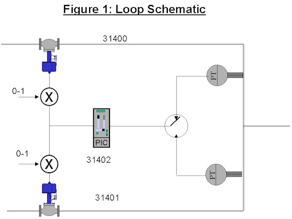
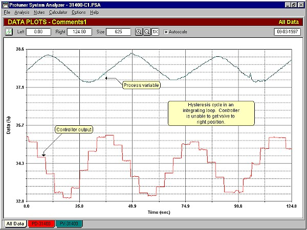
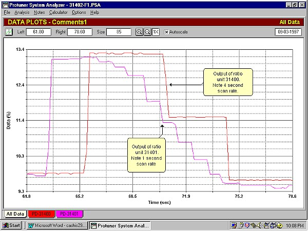
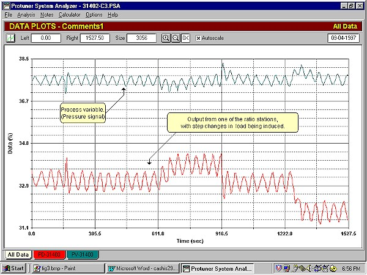
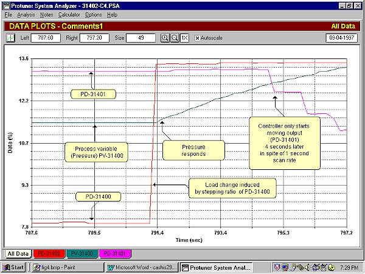

|
| [Home] [About us] [Contact us] [Training] [Optimisation services] [Protuner] |
| [Loop signatures] [Case histories] [Continuous loop performance monitoring] |
|
Control Loop Case History 29 SCAN RATE PROBLEM IN A DCS ON A FAST LOOP The control problem discussed here occurred on a large North Sea oil rig. The gas being extracted from the ocean bed is also used to power the generators and compressors on the rig. The gas comes into the rig in two streams at an extremely high pressure, which must be reduced to a lower level before it can be used. Figure 1 is a schematic of the control system. A single controller is used to control the pressure. The output of the controller is fed in parallel to the two valves via a ratio station in each leg to allow the operator to adjust the amount of gas being used in each stream. The 2 transmitters shown in the schematic are unnecessary. A single transmitter would have sufficed. The control system was a highly sophisticated, well known make of DCS.  The problem being experienced was that the loop was not fast enough to keep the pressure under control when fast load changes, such as a compressor trip, occurred. In such an event the pressure fluctuated so widely that high pressure trips were activated and tripped the system, which shut down power for the whole rig. It could take up to 6 hours to restart all the systems and get production back to normal. During this period whilst the rig was not producing, the potential loss, with penalties that could be levied by the gas distribution company, could be in the region of £1,000,000! It is often difficult to determine if a pressure loop is a self regulating or an integrating process. (Refer previous articles on this subject). Generally pressure reducing systems are self regulating. However if there is a large volume of gas present downstream from the control valve, they can be integrating. In this case the process proved to be integrating, which was a disappointment as integrating loops are often more difficult to control, and suffer from cycling if there is any hysteresis in the valve. One of the valves in this system was in fact found to have 5% hysteresis. Figure 2 illustrates the resultant cycle.  Figure 2 A 4 channel Protuner analyser was connected to read the signals from the transmitters, and from the output of each ratio station being sent to the valves. In the initial "closed loop test as found", where small setpoint changes are made with the existing tuning an extremely interesting observation was made which is shown in Figure 3. In the figure the 2 outputs are plotted on the same graph, and are shown when reacting to a setpoint change. As the outputs change, it can be seen that the one (Tag 31401) is operating at a scan rate of 1 second, whilst the other (Tag 31400), is only operating at a scan rate of 4 seconds. Initial checks of the DCS programme showed that every module in the control loop was in fact set to a scan rate of 1 second, and there was no apparent reason why the one should be operating at such a slow scan rate. Many hours later and with much burning of midnight oil, and after poring into every available manual on the DCS, it was found that individual blocks in the control loops are configured in "library sections". One library section can only hold a maximum number of blocks, so when the section is full, one must move to another library section, and configure blocks there. In this case, all the blocks in the control system under review, with the exception of one ratio station, were in one library section. The ratio station was in a separate section. When linking blocks in separate library sections, it was ascertained that an "external scan rate" has to be set in each library section. This was found to be set to 4 seconds.  Figure 3 Obviously this control needs to be as fast as possible, in view of the speed of the pressure surges. Unfortunately however, it was impossible to change the external scan rate with the system on line. It had to be shut down to do this, which was out of the question. Obviously it will be done the next time the rig is shut down. In an attempt to get round the problem, the next step was to try and speed up the tuning of controller to try and catch the surges. Tuning tests were then performed and faster tuning inserted. Figure 4 shows a portion of one of the tests, where step load changes were being induced. The control is remarkably good considering the expanded scale presented in the figure. However it may not be fast enough to catch really big disturbances like a compressor trip.  Figure 4 Whilst examining the one of the load tests, and whilst looking at the output of the ratio station (Tag 31401) that was scanning correctly at one second intervals, an interesting observation was made. This is shown in Figure 5. In this test, the load change was being induced by making a step change in the ratio value of the other ratio station (Tag 31400). This moved the associated valve quickly and affected the pressure measurement. The controller would then correct it. It can be seen in the figure that the pressure started responding to the step change within a second. The controller output as reflected on trace PD31401 should have also started moving within one second under the proportional action of the controller, to correct the load change. However it took no corrective action for 4 seconds, in spite of it having a scan rate of 1 second! The conclusion that was reached that the external scan rate of 4 seconds was somehow affecting the timing relationship of the whole loop. The recommendation was made to the client that the scan of the whole loop should be put on a fast scan of 100 ms., which is the fastest scan rate achievable on the DCS.  Figure 5 It is obvious that this situation is untenable where one is trying to achieve extremely fast reaction and control on a very fast process. Again it is a good illustration of a lack of understanding of the complexities of modern control systems, which had cost the client possibly millions of pounds in lost revenue and penalties over the last few years. As mentioned in several previous articles, it is essential that you thoroughly understand your controllers if you wish to successfully optimise your control loops! Michael
Brown is a specialist in control loop optimisation, with many years of
experience in process control instrumentation. His main activities are
consulting, and teaching practical control loop analysis and
optimisation. He gives training courses which can be held in clients'
plants, where students can have the added benefit of practising on live
loops. His work takes him to plants all over South Africa, and also to
other countries. He can be contacted at:
|